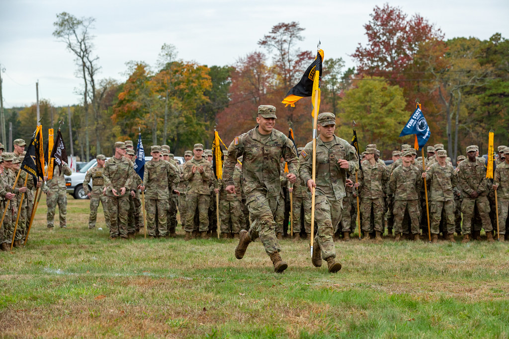
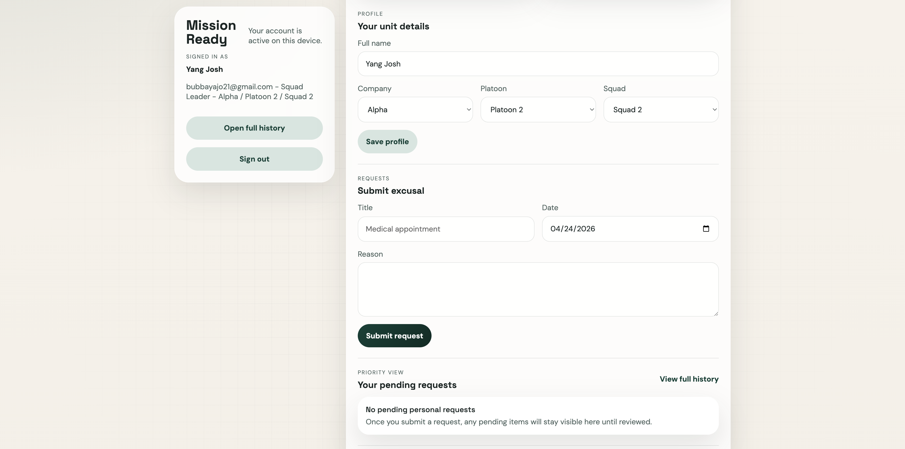
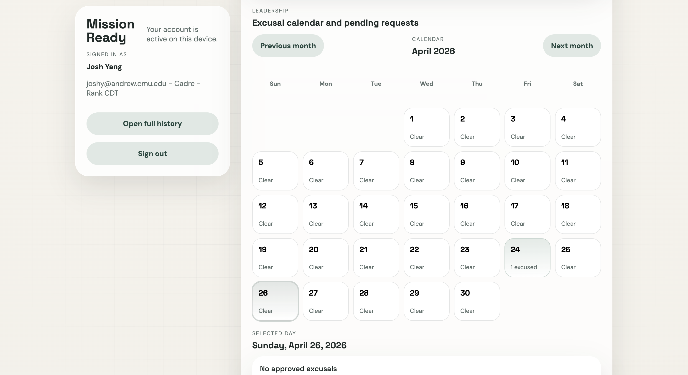

ROTC Excusal
System
Streamlining ROTC excusal requests through a centralized, trackable system that brings clarity to cadets and cadre alike.

Problem
The problem this project aims to address is the inefficiency experienced by current ROTC cadets in being excused from ROTC events such as Physical Training (PT), labs, and Field Training Exercises (FTXs). Under the current system, cadets must complete a PDF form each time they need to be excused from an activity. The PDF is sent up the chain of command for approval from the cadre. However, individual cadets almost never receive confirmation of their excusal, and the process is unclear to regular cadets.
Solution
Our proposed solution is a web application that consolidates all relevant information on excusals into a single source of truth for cadre and cadets. The web app will feature separate dashboards for cadres and cadets, granting role-based privileges to make requests, approve or deny them, and access historical data.
Currently, the visibility between levels of the cadet chain of command and between cadre is bad. Cadets rarely get confirmation that they've been officially excused, which leads to confusion, and sometimes people skip anyway.
The new system will make the approval status extremely clear and will remove the unnecessary people in the middle who don't do anything except forward the message up the chain of command. Additionally, the cadre will be able to see all requests organized and consolidated in one place, rather than having to track multiple different messages. Finally, with database integration, we will be able to more effectively track historical data when compared to the current 90-day limit on past messages in a free Slack organization.
Web App Examples
Cadet View

Cadet dashboard — submit requests and track approval status in real time.
Cadre View

Cadre dashboard — review, approve, or deny all incoming excusal requests in one place.
Impact & Implications
Organizational Impact
- Reduced overhead: Cadre no longer track requests across email, Slack, or paper forms.
- Increased accountability: Every request is logged, timestamped, and visible.
- Improved decision-making: Historical data lets cadre identify patterns and make informed evaluations.
- Standardization: All requests follow the same structured workflow.
Societal & Behavioral Impact
- Encourages responsibility: Clear status visibility discourages skipping and promotes proactive communication.
- Increases transparency: Cadets gain insight into decision outcomes.
- Strengthens trust: A transparent process reduces miscommunication.
- Digital transformation: Modern workflow practices enter traditionally manual systems.
Risks & Consequences
- Organizational resistance: Some cadre may prefer direct communication.
- Onboard Friction Some battalions may have concerns with transitioning into a new virtual system for excusals.
Competitive Advantage
Context-Specific Design
Purpose built around the U.S. Army ROTC organizational hierarchy, delivering a zero-ambiguity user experience at every level of the chain of command.
Frictionless Adoption
Scoped to solve one high-frequency, high-friction administrative pain point with surgical precision and an exceptionally low learning curve.
Zero-Infrastructure Access
Lightweight, cloud-deployable solution requiring no on-premise IT infrastructure — viable for any university ROTC program regardless of IT maturity.
Network Effects
As adoption grows across battalions, aggregated data improves benchmarking. Deep integration creates high switching costs and structural lock-in over time.
Why People Will Use It
Cadets benefit from high perceived usefulness — tracking excusal status in real time — and high perceived ease of use through a simple, streamlined online workflow.
The system connects cadets and cadre within a shared digital platform, creating bilateral value. As the user base grows, platform utility compounds through stronger network effects and richer historical data.
The application retains the military hierarchical structure where cadre must approve cadet excusals, ensuring the technical system is fully aligned with the existing social and organizational framework.
Our Team
 Eugene Hwang
Product Manager
Eugene Hwang
Product Manager
- Overall team and product structure coordination
- Assigning tasks to team members
- Ensuring all requirements were fulfilled
- Website development lead
- Creating prototype for application for wireframes
- Providing ROTC cadet/cadre experience
 Joohan Kim
Business Analyst
Joohan Kim
Business Analyst
- Research competitive advantage
- Determining social impact of application
- Applying social impact theories
- Leading frontend development of website
- Improving the user experience in the website
- Creating diagrams for the poster
Social Insights & Risk Analysis
Organizational Resistance & Change Management
Stakeholders may perceive the system as undermining established chain of command protocols — a critical concern in military-adjacent organizations where hierarchical integrity is a core cultural value.
The system employs a transparency-first governance model where all requests still flow through the established approval hierarchy, framing the platform as an enabler of institutional authority rather than a disruptor.
Onboarding Friction & Implementation Costs
High initial setup complexity and data migration overhead can suppress adoption rates, particularly among resource-constrained university programs without dedicated IT personnel.
A guided onboarding experience with multi-format data import ensures time to first value is minimized, supporting smoother diffusion of innovation across early and late majority adopter segments.
Structural Heterogeneity Across Programs
Non-standard ROTC organizational structures at different universities may create platform-fit mismatches, reducing the generalizability of a one-size-fits-all solution.
Custom workflow configuration allows program administrators to adapt the system to their unique organizational topology without requiring engineering intervention, preserving scalability while accommodating institutional variance.